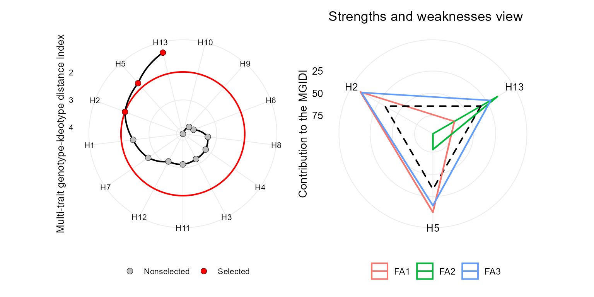
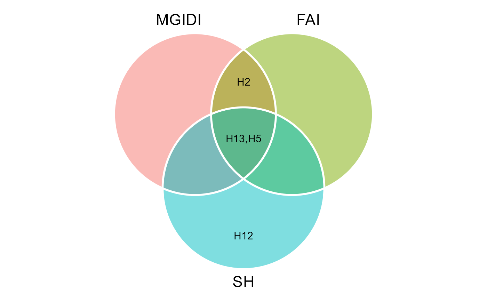

vignettes/vignettes_indexes.Rmd
vignettes_indexes.RmdIn this section we will use the data examples data_ge and data_ge2 provided in the metan package. For more information, please, see ?data_ge and ?data_ge2. Other data sets can be used provided that the following columns are in the dataset: environment, genotype, block/replicate and response variable(s). See the section Rendering engine to know how HTML tables were generated.
The function mtsi() is used to compute the multi-trait stability index (MTSI) proposed by Olivoto et al. (2019). The first argument is a model of the class waasb or waas. It is possible to compute the MTSI for both WAASB -stability only- and WAASBY -simultaneous selection for mean performance and stability.
In the following example, the selection of stable genotypes will consider five traits, namely, KW, NKE, PH, EH, and TKW. Note that the output of the function waasb() is passed to the function mtsi() by the forward-pipe operator %>%. Finally, the MTSI index is plotted using the function plot().
The following code considers that higher values for KW, NKE, TKW are better, and lower values for PH and EH are better. By using wresp = 65, the simultaneous selection for mean performance and stability will prioritize the mean performance (mean of the variables) rather than their stability across environments.
MTSI_index2 <-
data_ge2 %>%
waasb(ENV, GEN, REP,
resp = c(KW, NKE, PH, EH, TKW),
mresp = c("h, h, l, l, h"),
wresp = 65) %>% # Default is 50
mtsi(SI = 20)
# Factor analysis
gmd(MTSI_index2, "FA") %>% print_table()
# Scores for genotypes
gmd(MTSI_index2, "scores_gen") %>% print_table()
# Selection differential for the 'waasby' index
gmd(MTSI_index2, "sel_dif_waasby") %>% print_table()
# Selection differential for the waasb index
gmd(MTSI_index2, "sel_dif_waasb") %>% print_table()
# Selection differential for the variables
gmd(MTSI_index2, "sel_dif_trait") %>% print_table()
plot(MTSI_index2)
The MGIDI index can be seen as the MTSI index with a weigth of 100 for mean performance. This index is computed with the function mgidi(). Here, we will use the example data data_g(). By default, all traits are assumed to be increased. To change this default, use the argument ideotype. For example, if for three traits, the first one is assumed to be decreased and the last two are assumed to be increased, use ideotype = c("l, h, h").
mod <- gamem(data_g,
gen = GEN,
rep = REP,
resp = everything())
mgidi_index <- mgidi(mod,
SI = 20) # Selection intensity
p1 <- plot(mgidi_index, SI = 20)
p2 <- plot(mgidi_index, type = "contribution")
arrange_ggplot(p1, p2)
The Smith-Hazel index ((Smith 1936; Hazel 1943)) is computed with the function Smith_Hazel(). Users can compute the index either by declaring known genetic and phenotypic variance-covariance matrices or by using as inpute data, a model fitted with the function gamem(). In this case, the variance-covariance are extracted internally. The economic weights in the argument weights are set by default to 1 for all traits.
smith <- Smith_Hazel(mod, SI = 20)The FAI-BLUP is a multi-trait index based on factor analysis and ideotype-design recently proposed by Rocha, Machado, and Carneiro (2018). It is based on factor analysis, when the factorial scores of each ideotype are designed according to the desirable and undesirable factors. Then, a spatial probability is estimated based on genotype-ideotype distance, enabling genotype ranking (Rocha, Machado, and Carneiro 2018). Here we will use the mixed-model mod as inpute data. By default, the selection is made to increase the value of all traits. Change this default with the arguments DI and UI.
fai <- fai_blup(mod, SI = 20)
plot(fai)
The function coincidence_indexes() can be used to compute the coincidence index described by Hamblin and Zimmermann (1986), among the multi-trait indexes implemented in metan. To do that, just use a comma-separated list of indexes as inpute data and inform the total number of genotypes.
coincidence <- coincidence_index(mgidi_index, fai, smith, total = 13)
coincidence
# ---------------------------------------------------------------------------
# Coincidence index and common genotypes
# ---------------------------------------------------------------------------
# # A tibble: 3 x 5
# V1 V2 index common genotypes
# <chr> <chr> <dbl> <int> <chr>
# 1 mgidi_index fai 100 3 H13,H5,H2
# 2 mgidi_index smith 56.71 2 H13,H5
# 3 fai smith 56.71 2 H5,H13We can also produce a Venn plot to show the relationships between the indexes
MGIDI <- gmd(mgidi_index, "sel_gen")
# Class of the model: mgidi
# Variable extracted: sel_gen
FAI <- gmd(fai, "sel_gen")
# Class of the model: fai_blup
# Variable extracted: sel_gen
SH <- gmd(smith, "sel_gen")
# Class of the model: sh
# Variable extracted: sel_gen
# Create the plot
venn_plot(MGIDI, FAI, SH, show_elements = TRUE)
This vignette was built with pkgdown. All tables were produced with the package DT using the following function.
library(DT) # Used to make the tables
# Function to make HTML tables
print_table <- function(table, rownames = FALSE, digits = 3, ...){
df <- datatable(table, rownames = rownames, extensions = 'Buttons',
options = list(scrollX = TRUE,
dom = '<<t>Bp>',
buttons = c('copy', 'excel', 'pdf', 'print')), ...)
num_cols <- c(as.numeric(which(sapply(table, class) == "numeric")))
if(length(num_cols) > 0){
formatSignif(df, columns = num_cols, digits = digits)
} else{
df
}
}Hamblin, John, and Maria Jose de O. Zimmermann. 1986. “Breeding Common Bean for Yield in Mixtures.” In Plant Breeding Reviews, 245–72. Hoboken, NJ, USA: John Wiley & Sons, Inc. https://doi.org/10.1002/9781118061015.ch8.
Hazel, L N. 1943. “The genetic basis for constructing selection indexes.” Genetics 28 (6): 476–90. http://www.ncbi.nlm.nih.gov/pubmed/17247099 http://www.pubmedcentral.nih.gov/articlerender.fcgi?artid=PMC1209225.
Olivoto, T., A. D. C Lúcio, J. A. G. Da silva, B. G. Sari, and M. I. Diel. 2019. “Mean performance and stability in multi-environment trials II: Selection based on multiple traits.” Agronomy Journal 111 (6): 2961–9. https://doi.org/10.2134/agronj2019.03.0221.
Rocha, João Romero do Amaral Santos de Car, Juarez Campolina Machado, and Pedro Crescêncio Souza Carneiro. 2018. “Multitrait index based on factor analysis and ideotype-design: proposal and application on elephant grass breeding for bioenergy.” GCB Bioenergy 10 (1): 52–60. https://doi.org/10.1111/gcbb.12443.
Smith, H. F. 1936. “A discriminant function for plant selection.” Annals of Eugenics 7 (3): 240–50. https://doi.org/10.1111/j.1469-1809.1936.tb02143.x.